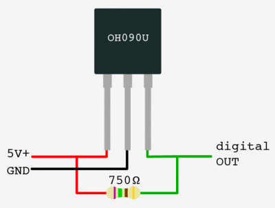
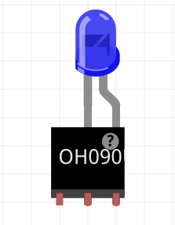
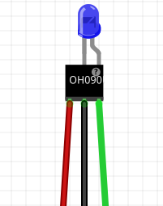
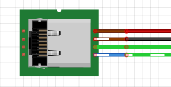
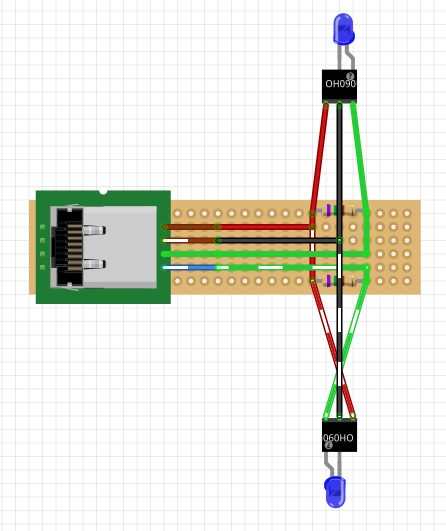

« Previous -
Version 21/41
(diff) -
Next » -
Current version
J. Simmons, 08/14/2016 02:29 pm
Assembly Instructions¶
Introduction¶
Below are the assembly instructions for the v0.3 Holoseat controller. This version is built using an AdaFruit Feather 32u4 Basic Proto. It also includes a remotely mountable sensor board. You will need to use your soldering skills on this build.
Sensor Board Assembly¶
Tools¶
- Diagonal Cutters
- Wire Strippers
- Needle Nose Pliers
- Soldering Iron
- Punch Down Tool
Materials¶
- (1) HS001 - Double-Side Prototype PCB
- (1) HS002 - Category 5e Jack
- (2) HS003 - 750 OHM 1/2W 1% Axial Resistor
- (2) HS004 - OH090U Hall Effect Sensor
- (2) HS005 - Diffused Blue 3mm LED
- Hook up wire
- Solder
Safety Issues¶
- Care must be taken when using sharp hand tools to avoid cuts
- Care must be taken when using the soldering iron, the tip is very hot
- Always wear safety glasses while working with soldering irons
- Avoid breathing in the soldering fumes, use a vent or hood if needed to provide adequate ventilation
Product¶
(1) Holoseat Sensor Board
Procedure¶
- Prepare Sensor/LED sub-assemblies
Repeat this procedure twice to assemble (2) Sensor/LED sub-assemblies- Take (1) HS004 - OH090U Hall Effect Sensor and (1) HS005 - Diffused Blue 3mm LED from your supplies
 - Solder the LED's anode (long leg) to pin 3 of the sensor (the data pin) and solder the LED's cathode (short leg) to pin 2 of the sensor (the ground pin) using the following steps
- Align the LED to it sits on top of the sensor with the long leg next to pin 3 and the short leg next to pin 2
- Wrap the LED's long leg around pin 3 to create a secure physical connection
- Wrap the LED's short leg around pin 2 to create a secure physical connection
- Apply solder to the two joints formed in the steps above to secure the connections between the LED and the sensor
- Cut approximately 40 cm lengths of black, red, and green hook up wire
- Strip both ends of the (3) lengths of hookup wire
- Solder the hookup wire to the ends of the sensor pins (red to pin 1, black to pin 2, and green to pin 3) using the following steps
- Wrap one end of the red hook up wire around pin 1 to create a secure physical connection
- Apply solder to the joint formed in the step above to secure the connections between the red hookup wire and pin 1
- Wrap one end of the black hook up wire around pin 2 to create a secure physical connection
- Apply solder to the joint formed in the step above to secure the connections between the black hookup wire and pin 2
- Wrap one end of the green hook up wire around pin 3 to create a secure physical connection
- Apply solder to the joint formed in the step above to secure the connections between the green hookup wire and pin 3
- Apply sufficient heat shrink to the red and green joints to cover them completely
- Apply sufficient heat shrink to assembly to completely cover the solder joints of all three leads, leaving some overlapping the LED to give it strain releaf
- Apply larger heat shrink to the three leads made from the hookup wire to complete the Sensor/LED sub-assembly
- Take (1) HS004 - OH090U Hall Effect Sensor and (1) HS005 - Diffused Blue 3mm LED from your supplies
- Prepare the HS002 - Category 5e Jack
- Cut approximately 20 cm each of the following colors of hookup wire: (2) green, (1) red, (1) black
- Strip one end of each length of hookup wire
- Use a punch down tool to connect the hookup wires to their corresponding positions on the HS002 - Category 5e Jack for pinout option A
- Punch down the stripped end of the red hookup wire to Brown wire position of the Cat5e Jack
- Punch down the stripped end of the black hookup wire to Brown/White wire position of the Cat5e Jack
- Punch down the stripped end of a green hookup wire to Green wire position of the Cat5e Jack
- Punch down the stripped end of the other green hookup wire to Blue/White wire position of the Cat5e Jack

- Finish Assembling the Sensor Board
Reference the image below for the following steps
- Connect the black leads
- Test fit the black leads from both Sensor/LED sub-assemblies and the HS002 - Category 5e Jack, cutting the wires to length as necessary (remember to leave room for the stripped wire)
- Strip the three black wires from the step above
- Position the three black wires above in the correct holes of the HS001 - Double-Side Prototype PCB and bend them over to create a secure physical connection
- Apply solder to the joint formed in the step above to secure the connection among the three black leads
- Connect the red leads
- Take the (2) HS003 - 750 OHM 1/2W 1% Axial Resistors and position them according to the diagram (making sure to bend their leads to secure them in place
- Test fit the red leads from both Sensor/LED sub-assemblies and the HS002 - Category 5e Jack, cutting the wires to length as necessary (remember to leave room for the stripped wire)
- Strip the three red wires from the step above
- Position the three red wires above in the correct holes of the HS001 - Double-Side Prototype PCB and bend them over to create a secure physical connection
- Cut a short length of red hookup wire to bridge the red leads according to the diagram
- Strip both ends of this additional length of red wire and place it according to the diagram, bending its ends over to create a secure physical connection
- Apply solder to the joint formed in the step above to secure the connection among the three red leads
- Connect each of the green leads
Repeat these steps for each of the sensors' green leads according to the diagram- Test fit the green leads from one of the Sensor/LED sub-assemblies and the HS002 - Category 5e Jack, cutting the wires to length as necessary (remember to leave room for the stripped wire)
- Strip the two green wires from the step above
- Position the two green wires above in the correct holes of the HS001 - Double-Side Prototype PCB and bend them over to create a secure physical connection
- Apply solder to the joint formed in the step above to secure the connection among the two green leads
- Connect the black leads
The Sensor Board is now complete.
Controller Assembly¶
Tools¶
- Diagonal Cutters
- Wire Strippers
- Needle Nose Pliers
- Soldering Iron
- Punch Down Tool
Materials¶
- Hook up wire
- Solder
Safety Issues¶
- Care must be taken when using sharp hand tools to avoid cuts
- Care must be taken when using the soldering iron, the tip is very hot
- Always wear safety glasses while working with soldering irons
- Avoid breathing in the soldering fumes, use a vent or hood if needed to provide adequate ventilation
Product¶
(1) Holoseat Controller
Procedure¶
- Step 1...
{kind=link}
{kind=link}
{kind=link}
{kind=link}
{kind=link}
{kind=link}
{kind=link}
{kind=link}
{kind=link}
{kind=link}
{kind=link}
{kind=link}
{kind=link}
{kind=link}
{kind=link}
{kind=link}